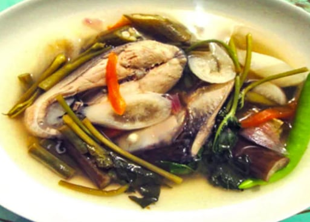

Sinigang na Bangus

Sinigang is a beloved traditional dish in the Philippines, widely recognized for
its unique sour and savory flavor. Believed to have pre-colonial roots, Sinigang
reflects the Filipino palate's natural inclination for sourness, using native
ingredients like tamarind, guava, or calamansi as souring agents. Though its
exact origin is hard to trace, Sinigang is deeply embedded in Filipino food
culture and is considered a staple in many households. Over the years, it has
gained popularity not only across different regions of the Philippines with each
having its own variation but also among international food lovers, often
celebrated as one of the best soups in the world.
Ingredients
- 1 whole Bangus (milkfish)
- 1 medium onion
- 2 medium tomatoes
- 1 pack tamarind mix
- 1 radish (labanos)
- 1 eggplant
- 1 bundle string bins
- 1-2 pieces green chili (siling haba)
- 1 bundle kangkong (water spinach)
- 6 cups of water
- Salt or fish sauce (patis)
Steps
- Prepare the Ingredients.
Clean the bangus. Chop the vegetables as needed.
- Boil water in a pot
Add the onion and tomatoes. Let them boil for about 3-5 minutes to release their flavor
- Add the radish and eggplant
Cook for another 3-5 minutes or until slightly tender
- Add the bangus slices
Simmer gently for 8-t0 minutes or until the fish is cooked through. Avoid stirring too much to keep the fish intact
-
Add the tamarind mix or fresh tamarind juice
Adjust the sourness to your preference
-
Add the string beans and green chili
Cook for another 2-3 minutes
-
Season with salt or fish sauce
Taste and adjust according to your preference
-
Add the kangkong last
Let it cook for 1-2 minutes or until just wilted
-
Turn off the heat and serve hot
Best enjoyed with steamed recipes